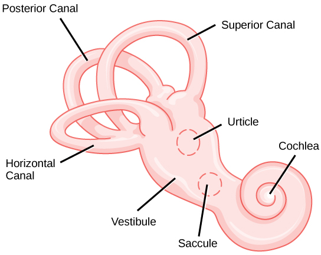

| July 2022 |
| by Do-While Jones |
Evolutionists claim ear fossils tell when reptiles evolved into mammals.
Yes, it is a silly title--but no more ridiculous than the three articles that just appeared in the peer-reviewed journal, Nature. The research paper, and the two articles commenting on the paper, claimed that a comparison of the size of fossilized semicircular canals indicate when reptiles evolved into mammals.
Reptiles are cold-blooded. They regulate their body temperature by moving into the sun, or moving into the shade. They get some of the power they need to survive from the sun, so you could say cold-blooded animals are solar powered (and that's why we did).
Mammals are warm-blooded. They get power from hydrocarbons (fats and sugars), which chemically aren't much different from gasoline. They have a complex control system which senses body temperature and burns more fuel when the animal is too cold, and cools off by burning less fuel, and sweating, when they get too hot.
Evolutionists foolishly believe cold-blooded reptiles evolved into warm-blooded mammals because hydrocarbon fuels are superior to solar power, making warm-blooded mammals more fit for survival than cold-blooded reptiles.
And if that isn't foolish (and unscientific) enough, some evolutionists believe they can tell when it happened by comparing the sizes of fossilized ears.
The research paper in Nature admits,
|
Endothermy [warm-bloodedness] is a quintessentially mammalian feature, intimately related to other hallmarks such as sweat glands and fur. However, its evolution remains one of the great unsolved mysteries of palaeontology. 1 |
The belief that the spontaneous origin of a complex control system to regulate temperature (involving changes in metabolism, the origin of sweat glands and fur) by chance is unscientific, and "one of the great unsolved mysteries" of evolution--but that doesn't stop it from being believed. The only questions are how it possibly could have happened, and when. Ricardo Araújo and his associates claim to have an answer to when it happened, based on the size of the semicircular canals in the ears of fish, reptiles, mammals, and birds.
The semicircular canals are three loops in the ear which are necessary for an animal to maintain balance. They are perpendicular to each other so that they can sense acceleration in the X-, Y-, and Z-directions (that is, forward/backward, left/right, and up/down). They are filled with fluid which presses against sensing nerves as a result of motion.
|
 |
|---|
All fluids have a property called "viscosity." Viscosity is a measure of how easily the fluid flows. Water has lower viscosity than honey. Viscosity often depends on temperature. If you heat a plastic bottle of honey in the microwave oven for 2 seconds,2 it will pour out much more easily than if you have kept the honey in the refrigerator for several hours.
|
Fluid viscosity decreases rapidly with increasing temperature. Therefore, to evolve a higher body temperature but still maintain the working range for the inner ear's sensing function would require compensatory changes in the size of the semicircular canals (Fig. 1). Thus, to compensate for the endolymph becoming more fluid with increasing temperature, the canal duct would have to become more slender to maintain its dynamic properties. 3 |
Araújo's theory is based on the facts that:
|
In a study published in Nature on 20 July, Ricardo Araújo, a palaeontologist at the University of Lisbon, and his colleagues propose that the shape and size of the bony canals of the inner ear could be used as a proxy for body temperature. The movement of fluid through the canals helps the body to monitor head position and motion, which is essential for vision and balance. And the fluid's viscosity changes with body temperature. The research team hypothesized that as body temperature increased and the animals became more active, the shape of the ear canals would have evolved to less viscous fluid to preserve balance and movement. To track this adaption, the team compared the inner ear structures and physiology of 50 living vertebrates, including reptiles, fish, birds and mammals. They developed a thermo-motility index based on inner ear shape, which, when adjusted for body size, enabled them to predict an animal's body temperature. 4 |
The main research article is filled with calculations of the TMI (the Thermo-Motility Index, a term which they invented) they estimated the body temperatures of extinct creatures based on how slender its semicircular canals were.
But even if there is a correlation between inner ear shape and body temperature, that doesn't prove that creatures with one shape of ears evolved into another creature. The time when this alleged evolution took place depends upon the speculative ages of fossils. There's no science here!
The conclusion of the research paper is,
|
Conclusions The thermal budget of vertebrates results from a complex interplay between internally generated heat and heat gained or lost at the body surface. Although inferring the thermoregulatory regime of extinct species can be complicated for these reasons, we use the TMI to demonstrate that a sharp shift to endothermy most probably occurred at the base of Mammaliamorpha, accompanied by expanded aerobic and anaerobic capacities and increased body temperatures. The Late Triassic emergence of the physiology and bauplan characterizing mammals was a decisive step that facilitated their evolutionary radiation during the Mesozoic Era and subsequent major ecological expansion during the Cenozoic Era. 5 |
Commenting on the paper, one of the editors of the journal said,
| The reptile-like ancestors of mammals evolved to be warm-blooded -- but the timing of this transition is hotly contested. Now scientists have used fossilized inner ear canals to suggest that the adaptation occurred around 230 million to 200 million years ago. But other researchers say this evidence is unlikely to settle the debate. 6 |
We are sure the "other researchers" are right for two reasons. First, there were no reptile-like ancestors of mammals which evolved to be warm-blooded. Second, If the debate is settled, there won't be any funding for further research.
| Quick links to | |
|---|---|
| Science Against Evolution Home Page |
Back issues of Disclosure (our newsletter) |
| Web Site of the Month |
Topical Index |
Footnotes:
1
Ricardo Araújo et al., Nature, 20 July 2022, "Inner ear biomechanics reveals a Late Triassic origin for mammalian endothermy", https://www.nature.com/articles/s41586-022-04963-z.
2
Honey heats up fast in the microwave, and will melt through a plastic bottle quickly, so be careful.
3
Stefan Glasauer & Hans Straka, Nature, 20 July 2022, "Evolution of thermoregulation as told by ear", https://www.nature.com/articles/d41586-022-01943-1
4
Bianca Nogrady, Nature, 20 July 2022, "Ear fossils hint at origin of warm-blooded mammals", https://www.nature.com/articles/d41586-022-01975-7
5
Ricardo Araújo et al., Nature, 20 July 2022, "Inner ear biomechanics reveals a Late Triassic origin for mammalian endothermy", https://www.nature.com/articles/s41586-022-04963-z.
6
Bianca Nogrady, Nature, 20 July 2022, "Ear fossils hint at origin of warm-blooded mammals", https://www.nature.com/articles/d41586-022-01975-7